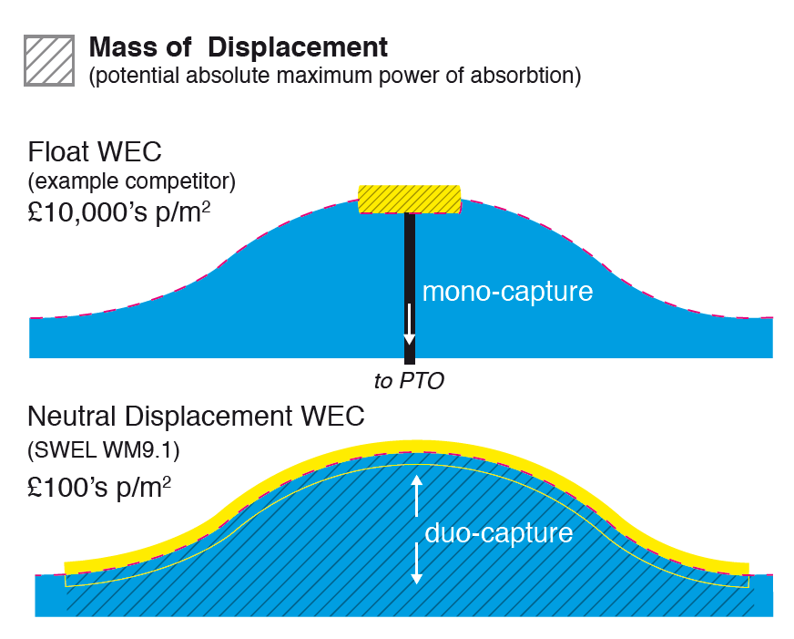

Technology
The Waveline Magnet is comprised of an array of flexible assemblies linked by a spine power system. The patented technology allows the wave to pass through the system, generating power as the wave rises and falls.
The wave energy converter is designed to embrace the surface of the sea, or the ‘wave line’ as it is often referred to by NWEL. This allows the WEC to become ONE MOVING MASS with the wave itself creating a unique interaction that allows NWEL to REGULATE how much energy is extracted from the wave in a CONTROLLED AND NON-DISRUPTIVE manner.
The seamless and frictionless interaction is a UNIQUE CHARACTERISTIC of the technology that allows it to work in harmony and in synchronization with the deployed sea area, IRRESPECTIVE of the wave profile and the weather conditions.
